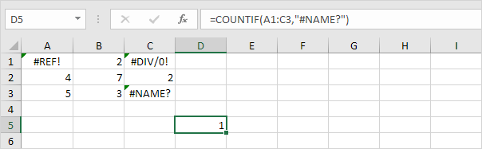

COUNTIF
Numeric Criteria | Text Tricks | Count Booleans | Count Errors | And Criteria | Or Criteria | More about Countif | Count Magic
The powerful COUNTIF function in Excel counts cells based on one criteria. This page contains many easy to follow COUNTIF examples.
Numeric Criteria
Use the COUNTIF function in Excel to count cells that are equal to a value, count cells that are greater than or equal to a value, etc.
1. The COUNTIF function below counts the number of cells that are equal to 20.

2. The following COUNTIF function gives the exact same result.

3. The COUNTIF function below counts the number of cells that are greater than or equal to 10.

4. The following COUNTIF function gives the exact same result.

Explanation: the & operator joins the 'greater than or equal to' symbol and the value in cell C1.
5. The COUNTIF function below counts the number of cells that are not equal to 7.

6. The COUNTIF functions below count the number of cells that are equal to 3 or 7.

Text Tricks
Use the COUNTIF function in Excel and a few tricks to count cells that contain specific text. Always enclose text in double quotation marks.
1. The COUNTIF function below counts the number of cells that contain exactly star.

2. The COUNTIF function below counts the number of cells that contain exactly star + 1 character. A question mark (?) matches exactly one character.

3. The COUNTIF function below counts the number of cells that contain exactly star + a series of zero or more characters. An asterisk (*) matches a series of zero or more characters.

4. The COUNTIF function below counts the number of cells that contain star in any way.

5. The COUNTIF function below counts the number of cells that contain text.

Count Booleans
Use the COUNTIF function in Excel to count Boolean values (TRUE or FALSE).
1. The COUNTIF function below counts the number of cells that contain the Boolean TRUE.

2. The COUNTIF function below counts the number of cells that contain the Boolean FALSE.

Count Errors
Use the COUNTIF function in Excel to count specific errors.
1. The COUNTIF function below counts the number of cells that contain the #NAME? error.

2. The array formula below counts the total number of errors in a range of cells.

Note: finish an array formula by pressing CTRL + SHIFT + ENTER. Excel adds the curly braces {}. In Excel 365 or Excel 2021, finish by simply pressing Enter. You won't see curly braces. Visit our page about Counting Errors for detailed instructions on how to create this array formula.
And Criteria
Counting with And criteria in Excel is easy. The COUNTIFS function (with the letter S at the end) in Excel counts cells based on two or more criteria.
1. For example, to count the number of rows that contain Google and Stanford, simply use the COUNTIFS function.

Or Criteria
Counting with Or criteria in Excel can be tricky.
1. The COUNTIF functions below count the number of cells that contain Google or Facebook (one column). No rocket science so far.

2. However, if you want to count the number of rows that contain Google or Stanford (two columns), you cannot simply use the COUNTIF function twice (see the picture below).

Note: rows that contain Google and Stanford are counted twice, but they should only be counted once. 4 is the answer we are looking for.
3. The array formula below does the trick.

Note: finish an array formula by pressing CTRL + SHIFT + ENTER. Excel adds the curly braces {}. In Excel 365 or Excel 2021, finish by simply pressing Enter. You won't see curly braces. Visit our page about Counting with Or Criteria for instructions on how to create this array formula.
More about Countif
The COUNTIF function is a great function. Let's take a look at a few more cool examples.
1. The COUNTIF function below uses a named range. The named range Ages refers to the range A1:A6.

2. The COUNTIF function below counts the number of cells that are less than the average of the ages (32.2).

3. To count cells between two numbers, use the COUNTIFS function (with the letter S at the end).

4. Use the COUNTIF function to count how many times each value occurs in the named range Ages.

Note: cell B2 contains the formula =COUNTIF(Ages,A2), cell B3 =COUNTIF(Ages,A3), etc.
5. Add the IF function to find the duplicates.
Tip: use COUNTIF and conditional formatting to find and highlight duplicates in Excel.
Count Magic
The COUNTIF function can't count how many times a specific word occurs in a cell or range of cells. All we need is a little magic!
1. The formula below counts how many times the word "dog" occurs in cell A1.

2. The formula below counts how many times the word "dog" occurs in the range A1:A2.

Note: visit our page about counting words to learn more about these formulas.